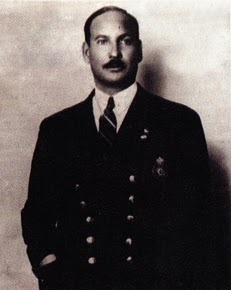
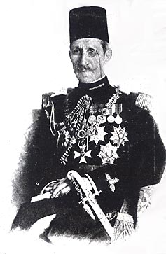

Al Ahly Sporting Club, commonly known as Al Ahly, is an Egyptian professional sports club based in Cairo, Egypt.
The club is mainly known for its professional football team which currently plays in the Egyptian Premier League, the highest league in the Egyptian football league system.
The club is renowned for its consistent success at both domestic and continental levels, regularly contending in CAF tournaments.
Founded on 24 April 1907 as a gathering place for Cairo's Student Unions.
Al Ahly is the most successful club in Africa.
The idea of establishing Al Ahly came in the first 10 years of the 20th century and was firstly raised by Omar Lotfy who was a student in the Egyptian Law School during his presidency of the High School Students Club, which was established in 1905. The establishment of a club for high school students was for political reasons, and the students needed a sports club to gather them for leisure and exercise. He discussed the idea of establishing the club with a group of friends who were enthusiastic about it, and in 1907 Al Ahly was established. Talaat Harb, president of the Bank of Egypt, contributed £E100 to the establishment of the club. The club was first headed by Alfred Mitchell-Innes, who was a British advisor to the Ministry of Finance at the time, in order to facilitate financial support for the club. An official meeting of the club's board was held on 24 April 1907. The committee met at 5:30 pm in the house of Mitchell-Innes in Giza under his chairmanship and the membership of Idris Ragheb Bey, Ismael Seri Pasha, Amin Sami Pasha, Omar Lotfi Bek and Mohamed Effendi Sherif as secretary. After the establishment of the club was approved, the main building was designed by architect Ismail Seri, and revised by Mitchell-Innes. A civil company on behalf of Al Ahly Sports Club was established. Shares of the company were worth £E5 each, and it was the goal of the club when it was established to raise £E5,000. Only £E3,165 were collected over a year, which was not enough. This forced the club to borrow £E1,000 from the National Bank of Egypt in March 1908 by Omar Sultan and Idris Ragheb and Talaat Harb contributed £E100 to the establishment of the club. The first honorary president of the club was the Minister of Education Saad Zaghloul. The name of Al Ahly Sporting Club was suggested by Amine Samy Amin, to serve the students and graduates of high schools who were the mainstay of the revolution against the British occupation. On 2 April 1908, Mitchell-Innes stepped down as president of the club. Aziz Ezzat was appointed as the new president and became the first Egyptian president of Al Ahly. The official opening ceremony of the club was held in its main building on 26 February 1908. Mokhtar El Tetsh, one of the club legends, is the namesake of the club's old stadium and current training ground The game of football was not one of the goals of the founders of Al Ahly club, but rather to open its doors to students of higher schools to meet and practice political dialogues. However, the graduates of high schools who were members of the club fell in love with football, which prompted Ahly to build the first stadium in 1909. At the time , they called it Al-Hawsh; colloquially meaning the courtyard in Egyptian Arabic. The stadium was improved over the years, eventually becoming Mokhtar El-Tetsh Stadium. The first official football team was established in 1911. The team was primary and secondary school players who played football ball in Al-Hawash, which was established in 1909 in the club's land. The names of the first players of Al Ahly were as follows: Hussain Higazi, Abdel Fattah Taher, Fouad Darwish, Hussein Mansour, and Ibrahim Fahmy. The star of this team was the striker Hussein Hegazi. In 1915, Al Ahly made tours of Egyptian cities to play matches and to spread football and its culture. Al Ahly played in Alexandria, Port Said, Assiut, and Ismailia. The team, led by the star Hussein Hegazy, faced many teams, including foreign teams belonging to the British army, which increased the popularity of Al Ahly and the new game in Egypt. Ahly contributed with Zamalek SC, El Sekka El Hadid SC in the formation of the first football team of Egypt to participate in the Olympic games 1920. The club also contributed to the establishment of the Egyptian Football Association. In 1923, Al Ahly played an active role in the establishment of the Egyptian Tennis Federation.
April 1907 - April 1908 An English national, he was working as an advisor to the Egyptian Ministry of Finance at the time. He was chosen to be the first president of Al-Ahly Club because of his influence with the British occupation authorities who controlled matters at that time. Indeed, Ince contributed to facilitating the process of obtaining the appropriate land to build the club through the government. Michel Ince continued as the club's official president until April 2, 1908 , when the board of directors accepted his resignation because he was preparing to return to his country .
April 1908 - February 1916 The first Egyptian Chairman of the Board of Directors of Al-Ahly Club . During his reign, the club's branch was opened in Al Gezira in 1909 , and the first football team was established in 1911. He remained president of the club until 1916 , after which he became the honorary president of the club from 1929 to 1941

February 1916 - February 1924
He served as Prime Minister of Egypt twice during the reign of King Fouad I , and was one of the participants in founding the Al-Ahly Club.
On February 9 , 1916 , he assumed the presidency of the club.
The most notable achievement of his presidency is that he was the first to draft the Al-Ahly Club law after assuming the presidency at the beginning of 1916 , and he remained President of the club until 1924
February 1924 - February 1944
He was the first president of the Egyptian Football Association, which was in 1921 ,
and the fourth president of the Al-Ahly Club.
He was one of the major founders of the Egyptian Al -Ahly Club in 1907.
He remained a member of its supreme committee for several years,
then he was elected president of the club from 1924 until 1940, and he played a major role.
In developing the club, he worked to involve Egypt in the Olympics in 1920 AD and in the Olympics in 1924 AD .
He also assumed the position of agent of the National Committee for Physical Sports and became its president.
He also assumed the presidency of the club for a second period from 1941 until 1944
January 1944 - February 1946
In 1944 , he was elected president of Al-Ahly Club after the death of former president Jaafar Wali Pasha .
Hassanein was also president of the Royal Arms Club. During his reign,
a swimming pool was established at the Al-Ahly Club on the island for the first time in 1945 ,
and his term ended with his death on the afternoon of February 19, 1946, when he was involved in an accident on the Qasr al-Nil Bridge.
February 1947 - December 1961
He was one of the leading businessmen in Egypt.
Before he became president of the club, he donated an amount of 3,000 pounds to the swimming pool construction project.
A ceremony was held honoring him in 1944 in appreciation of his efforts.
Two years later , Ahmed Hassanein Pasha died, and Ahmed Aboud Pasha became the president by acclamation. During his reign,
he received The football team won 9 consecutive General League championships from 1948 to 1956.
December 1962 - December 1965
He assumed the presidency of Al-Ahly Club for three years.
He adopted the idea of a new headquarters for Al-Ahly, which was proposed on June 28 , 1965 ,
and the establishment of club branches and new headquarters throughout Egypt.
December 1965 - July 1967 / November 1972 - December 1980
His first term began in 1965 until the 1967 war , then he returned to the presidency again in 1971.
During his reign, Al-Ahly participated for the first time in the African Champions League in 1976,
and he took the first step towards building a new headquarters for Al-Ahly in Nasr City.
July 1967 - July 1971
He assumed the presidency of Al-Ahly Club in the period between Abdel Mohsen Murtaji's two terms due to Murtaji being summoned to participate in the 1967 war,
and his term was not full of sporting events as the 1967 war caused the cessation of sporting activity for a long period.
In 1971, Abdul Mohsen Murtaji returned to head the club.
December 1980 - December 1988 / February 1992 - May 2002
1988 After retiring from playing football , he worked at the club as football director in 1971 ,
and in 1972 he decided to run in the elections for the Al-Ahly Club's Board of Directors after being elected to the Board of Directors,
and he obtained 45% of the votes, with a slight difference from Abdel Mohsen Murtaji .
Then he ran for the elections for the second time in 1980 and was able to win the presidency of the Al-Ahly Club's Board of Directors.
He continued to head the Al-Ahly Club until 1988, when he decided to move away from the arena and leave the opportunity for others to experience it.
Then he returned again in 1990 until 1992 , and he died in 2002.
July 1967 - July 1971
He assumed the presidency of the club during the period between Saleh Selim's terms ,
and became famous during his coaching period for Al-Ahly club, where he led Al-Ahly's first team to victory over European champion Benfica in 1962,
and led the Egyptian national football team to reach the Olympic Games in Los Angeles in 1984.
September 2002 - March 2014
Hassan Hamdi entered the board of directors of Al-Ahly Club as a member of the presidency of Saleh Selim and then Mohamed Abdo Saleh Al-Wahsh,
then became a deputy in favor of Selim in 2000, and was elected president of the club after the death of Saleh Selim in 2002,
and the first football club won a large number of titles and championships,
and remained 14 years president of the club, then succeeded by Mahmoud Taher in March 2014.
March 2014 - November 2017
He became a member of the board of directors in 1996 during the reign of Saleh Selim, and was also a member of the board in the next session of 2000,
running for the presidency of the club in 2014, and succeeding Hassan Hamdi as president of the club.
December 2017 - Present
One of the most popular players of Al-Ahly Football Club, he was named the best player in Africa for the year 1983,
after retiring from football, he was elected a member of the Board of Directors in 1988, and in 2000 Al-Khatib returned again to the elections,
and succeeded in obtaining the first place in membership, and in 2002 he was elected treasurer,
and in the 2004 elections he was elected vice president of the club, and on November 30, 2017 he ran for the position of president, and beat Mahmoud Taher , and became president of the club.